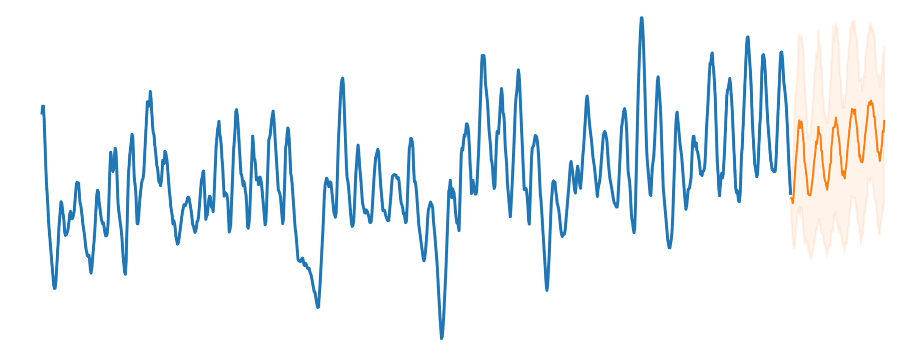

**[Dr. Alvaro Perez-Diaz](https://alvarop.me)**
_Researcher & Data Scientist_
_Senseye Predictive Maintenance, Siemens_

I'm a researcher and data scientist at Siemens, working on a variety of topics around
predictive maintenance, including time series forecasting and anomaly detection, using technologies such as deep learning,
LLMs and Bayesian modelling.
Formerly, I did a PhD in the Agents, Interaction and Complexity group, at the University of Southampton in the UK.
My research studied the interaction between large fleets of electric vehicles and electricity markets. By using
techniques from different fields of AI, we were able to coordinate the charging of electric vehicles in order to
achieve lower prices and reduced congestion. More information about my research can be found in the publications
section.
In my free time, I sometimes engage in side projects which usually lie somewhere between computer science,
electronics and education. These experiments occasionally get featured in cool websites and magazines, or win small
prizes. Relevant projects I've worked on can be found in the projects section.
I also enjoy the outdoors and can be often found climbing, running, cycling or hiking.
I can be contacted here.